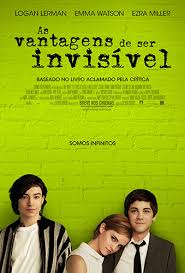

as vantagens de ser invisivel
A história acompanha Charlie (Logan Lerman), um jovem que
tem dificuldades para interagir em sua nova escola e vive com os nervos à flor da pele.
Ele tem um professor de literatura que acredita nele e o vê como um gênio, mas tudo começa
a realmente mudar quando dois amigos, Patrick (Ezra Miller) e Sam (Emma Watson), passam a
andar com ele.O filme conta uma história que envolve traumas pesados de forma sensível e
intimista. Isso é, em parte, mérito de Stephen Chbosky, roteirista, diretor e autor do livro
no qual o longa foi baseado. A trilha sonora original de Michael Brook, responsável por Na
Natureza Selvagem, é incrível! A seleção musical também foi certeira, focando em clássicos
do rock alternativo dos anos 70 e 90, como Heroes, de David Bowie, que aparece em dois momentos importantes.
Go somewhere